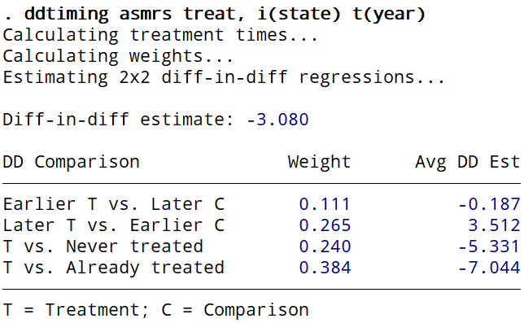
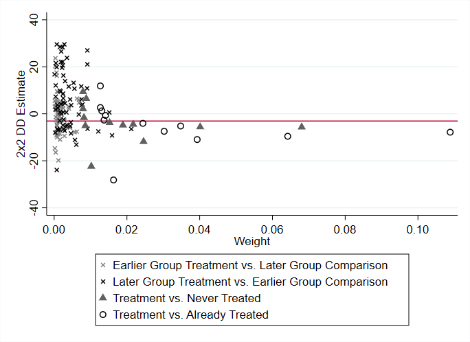

ddtiming is a Stata command that implements a decomposition of a difference-in-differences (DD) estimator with variation in treatment timing, based on Goodman-Bacon (2018). The two-way fixed effects DD model is a weighted average of all possible two-group/two period DD estimators. The command generates a scatterplot of 2x2 DD estimates and their associated weights.
An R package called bacondecomp is available to perform the decomposition.
I decided to program a Stata command during my postdoc. I felt that my programming skills were finally advanced enough to pull it off and I wanted to make a small contribution to the Stata user community. I read Andrew's paper when it was first published at the NBER and, like all who read it, I thought it was a brilliant, insightful paper. Unable to locate a command for the main result on Andrew's website, I resolved to program it myself.
Unbeknown to me, Andrew had been discussing the creation of a Stata command with Austin Nichols. After I released ddtiming, Austin worked on a new command that incorporates revisions to Andrew's paper, most notably to permit the inclusion of covariates in the DD model. That command is bacondecomp. Although bacondecomp currently incorporates some of ddtiming's code, bacondecomp should be thought of as superseding ddtiming for Stata users.
Despite effectively becoming obsolete, I will continue to host ddtiming on my site. I recommend, however, that users consider using bacondecomp rather than ddtiming.
To install the ddtiming command in Stata, either type into the command window
net describe ddtiming, from(https://tgoldring.com/code/)
net install ddtiming
or type
net install ddtiming, from(https://tgoldring.com/code/)
ddtiming can replicate the example in Goodman-Bacon (2018). Download and load a dataset with the timing of no-fault divorce laws and female suicide rates (Stevenson and Wolfers 2006):
net get ddtiming
use nofault_divorce.dta
For comparison, estimate a two-way fixed effects DD model of female suicide on no-fault divorce reforms:
areg asmrs treat i.year, a(state) vce(robust)
Apply the DD decomposition theorem in Goodman-Bacon (2018) to the two-way fixed effects DD model:
ddtiming asmrs treat, i(state) t(year)
You should see the following output and scatterplot:


The scatterplot replicates Figure 6 in Goodman-Bacon (2018). Additionally, we can add options to the command to modify the look of the scatterplot:
ddtiming asmrs treat, i(state) t(year) ddline(lwidth(thick)) ///
ylabel(-30(10)30) legend(order(3 4 1 2)) savegraph(nfd.jpg) ///
savedata(nfd) replace
This command demonstrates the use of ddtiming's options (ddline, savegraph, savedata) and twoway options (ylabel, legend). For descriptions of all options and additional help, type
help ddtiming
Goodman-Bacon, Andrew. 2018. "Difference-in-differences with variation in treatment timing". Working paper.
Stevenson, Betsey and Justin Wolfers. 2006. "Bargaining in the Shadow of the Law: Divorce Laws and Family Distress". The Quarterly Journal of Economics 121(1): 267-288.